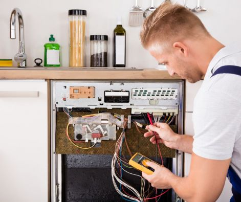
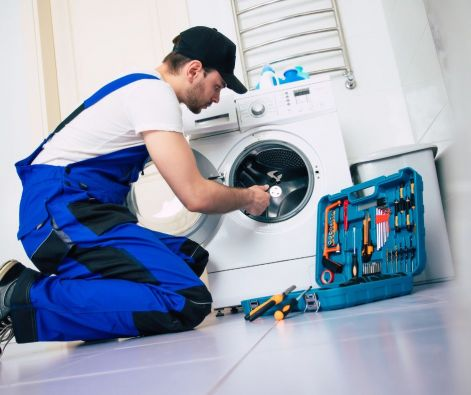

Háztartásigép Szakszerviz
Indesit, Ariston, Whirlpool, Teka, Fagor, Candy, Zanussi, Electrolux, Aeg, Gorenje, Mora, Beko, Bosch, Elektrabregenz, Samsung Háztartási gépek Szakszervize.
Mosógépek, Mosogatógépek javítása,
Szárítógépek javítása,
Gáz főzőlapok, Gáz sütők, Gáz tűzhelyek beüzemelése, és javítása
Villany tűzhelyek, Villany sütők javítása, Főzőlapok,
Porszívó, Kávéfőző, Mikrohullámú sütő, Olajsütő, Olaj radiátor, Hűsugárzó, Konyhai kisgépek Ventilátorok, Vízhűtők Javítása.
Vezérlő, és fordulat szabályzó Elektronika panelek javítása.
Figyelem, a javításra váró, vagy a már elkészült gépeket az ügyfél kiértesítésétől számítva, maximum 1 hónapig tároljuk, utána szanálásra kerülnek!
Ipari gépeket NEM javítunk!
Telefonos elérhetőségeink:
Hétfőtől- Péntekig 9-16h között.
Egyéb időpontokban NEM vagyunk elérhetőek!
- 06705556109
- 06704272131
- 06308944199
- VIBER: 06308944199
Email: haztartasigepszakszerviz1@gmail.com
Általunk szervizelt települések:
Budapest, és
Pest Megye településein.
Szervizünk 2008- ban nyílt meg a szolgáltató iparban, mint Háztartásigép Szerviz. Kezdetben Garanciális szakszervizként működtünk, mára azonban már a legtöbb gyártó termékét javítjuk mind Budapesten, és Pest megyében egyaránt. Különös gondossággal ügyelünk arra, hogy kollégáink a lehető legtökéletesebb munkát végezzék, és az ügyfeleink részére csak és kizárólag minőségi új alkatrészeket építsenek be az elromlott háztartási gépeikbe. Akciók, kedvezmények szintén mindennaposak nálunk, a cél az elégedett ügyfél, ez vezérel minket munkásságunk alatt, és ezt tartom legfőbb szempontnak a kollégák megválogatása során. Régebben mi is belestünk abba a hibába, mint minden szerviz, hogy bárkit felvettünk szerelőink közé, mára viszont szigorú szűrésen kell átesnie mindenkinek, hogy a csapatunk ékes tagja lehessen! A szakmai továbbképzések rendszeresek, és elvárt a felkészültség minden lehetséges készülék, és munka tekintetében.
Indesit-Ariston-Hotpoint-Whirlpool-Gorenje-Candy-Beko-Lg-Bosch-Siemens-Zanussi-Electrolux-Aeg-Samsung-Teka-Pelgrim- szerviz.
Szakembereink magasan képzett, kiváló műszerészek. Hosszú évtizedek alatt végzett munkájukkal sajátították el, a háztartási gépek profi szinten történő javítását.
Mindegyikőjük szakszervizes múlttal rendelkezik, közöttük gyakorlati oktató tanár is dolgozik.
Működésünk alatt sok szerviz, és szerelő után dolgoztunk már, és jelenleg is hívnak minket az ország különböző szervizeiből tanácsadás, és segítség nyújtása a javításokhoz megkereséssel.
Javításoknál csak saját alkatrészraktárról dolgozunk! Erre tudunk garanciát vállalni.
Az oldalsó menüpontok közül kiválaszthatja az Ön készülékének legmegfelelőbb tájékoztató oldalt, ahol minden fontos információt megtalál az adott hibára. A készüléke hibájának bejelentéséhez szükséges adatok bediktálásához is talál infót, a menüpontok megnyitása után.
Csak saját alkatrész raktárról dolgozunk, saját alkatrész árakkal. Erre tudunk garanciát adni. Mások által beszerzett alkatrészeket szervizünk nem épít be!
Háztartási gépei ha sorra meg - meg állnak, akkor telefonáljon nekünk, mi megoldjuk a problémáját